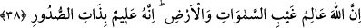
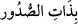
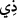
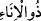
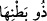

gönder de bir miktar iyi amel işleyelim.” Bu feryâd devam eder. Hak Sübhânehu ve
Teâlâ şöyle buyurur: “Sizin için hayat verdim, uyarıcı/peygamber gönderdim size.”
“Evet,” derler; “hayat bulduk, uyarıcıyı da gördük.” Allah teâlâ buyurur: “O halde
Cehennem azabını tadınız!”
Öyleyse “Şimdi tadın (azabı)!” İnkâr ve şirk ile nefislerine zulmeden “zâlimlerin”
kendilerinden azâbı defedecek bir “yardımcısı yoktur” denilir.
Burada kâfirlerin dünyada iken uykuda olduklarına, bundan dolayı azabı
tatmadıklarına, ancak öldüklerinde ve tekrar dirildiklerinde tam bir uyanıklıkla
uyandıklarına ve işte o zaman azâbı tadıp idrak ettiklerine işâret edilmektedir.
38. Allah, göklerin ve yerin gaybını bilir. O, kalplerin içinde ne varsa onu da
hakkıyla bilendir.
Göklerde ve yerde kullardan gâib ve onlara gizli olan şeyin bilgisi yalnız Allah’a
âiddir. Kulların halleri Allah’a nasıl gizli kalır ki! “Şayet bu kullar dünyaya geri
gönderilseler yine kendilerine yasak edilen şeylere döneceklerdir” (el-En’âm 6/28).
Burada “ ifâdesindeki “ kelimesinden cins mânâsı murad edildiği için
Allah Teâlâ “zevât” diye çoğul olarak buyurmamıştır. “ kelimesi, sâhip mânâsındaki
“” kelimesinin müennesidir. Mânâ, Allah Teâlâ sadırların sahibi olan gizli şeyleri
yâni kalpleri bilir, demektir. Yâni sinelerde gizli olan şeyleri bilendir. Burada mevsuf
olan “kulûb” kelimesi kaldırılmış; onun sıfatı olan “zat” kelimesi mevsufun yerine
getirilmiştir. Kalple kâim olan vesvese ve kuruntular, kalbe girdikleri ve oraya
yerleştikleri için kalbin sahibi kabul edilmişlerdir. Mesela süte de bu mânâda “
yâni “kap sahibi” denilir. Yine ana karnındaki cenine de “ yâni “karın sahibi”
denilir. İşte burada “zat” kelimesinin “sudûr” kelimesine muzaf olması, böyle bir
ilgiden dolayıdır.
et-Te’vîlâtü’n-Necmiyye’de der ki: Allah Teâlâ muhlislerin ihlâsını, sâdıkların
sıdkını bilir ki bunlar kalplerin semâlarındaki gaybi durumlarındandır. Yine Allah Teâlâ
münafıkların nifakını, inkârcıların inkârını da bilir ki bunlar da nefislerin arzının gaybî
durumlarındandır. Burada hem vaad hem de tehdid vardır. Birincisinin hükmü cennet ve
kurbet; ikincisinin hükmü cehennem ve firkattır.
Musa (a.s.) Hak Teâlâ Hazretlerine olan münâcâtında “Allahım! Sen bu insanları
cehenneme sokmak için mi yarattın?” dedi. Allah Teâlâ, Musa (a.s.)’a “Sen bir ekin ek,”
buyurdu. Musa (a.s.) ekin ekti; Allah Teâlâ daha sonra: “Bu ekini toplayıp hasad ve
harman yap,” buyurdu. Musa (a.s.) bunu da yaptı. Bu sefer Allah Teâlâ: “Tarlada